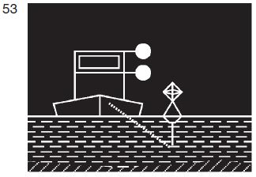
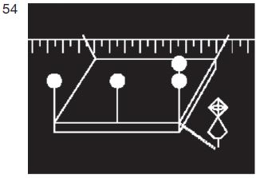
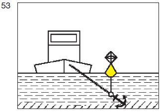
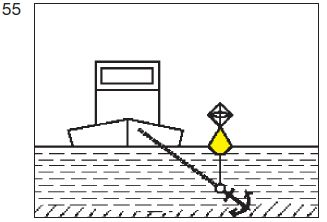

| ein von allen Seiten sichtbares zusätzliches weißes gewöhnliches Licht 1,00 m unter dem Licht nach § 3.20 Nummer 1 oder, wenn zwei Stillliegelichter gesetzt sind, unter dem Licht, das dem Anker am nächsten liegt. |  |
| zwei von allen Seiten sichtbare weiße gewöhnliche Lichter, die in einem Abstand von 1,00 m übereinander angebracht sind, ersetzt werden. |  |
|  |  |
| durch eine Tonne mit Radarreflektor und einem von allen Seiten sichtbaren weißen gewöhnlichen Licht; |  |
| durch einen gelben Döpper mit Radarreflektor. |  |